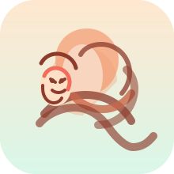

💬 Frage Jesus, wie er dein Bedürfnis stillen könnte
Diese Antwort berücksichtigt dein aktuelles Anliegen, das gewählte Bedürfnis, deine eigene Beschreibung und deine Kindheitserinnerung.
Dein Anliegen im Überblick
Aus der Bedürfnis-Erklärung
Fülle zunächst dein Anliegen, das Bedürfnis, deine persönliche Beschreibung und – wenn möglich – deine Kindheitserinnerung in der Hauptansicht aus, damit Jesus dich gezielt ansprechen kann.
📚 Zu den Bedürfnissen🙏 Setze dich im Glauben auf den Gnadenthron, wo Jesus als barmherziger Hohepriester sitzt. Stell dir vor, was er dir sagt und wie er dir jetzt Gnade schenkt. Meditiere 1–2 Minuten über seine Worte und schreibe auf, was Jesus dir gesagt hat.